Manual completo para quem ensina: como preparar, aplicar e acompanhar atividades em grupo em que cada grupo tem uma parte e só a turma inteira tem o quadro completo.
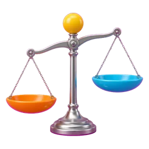
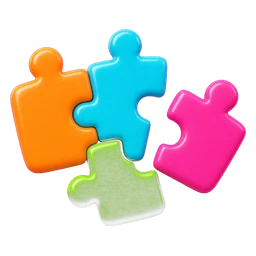
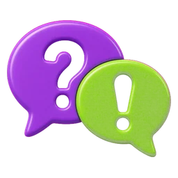
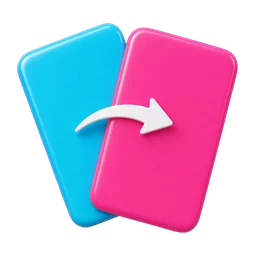
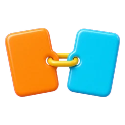
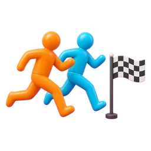
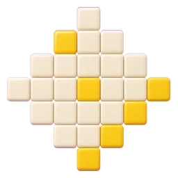
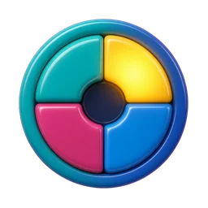
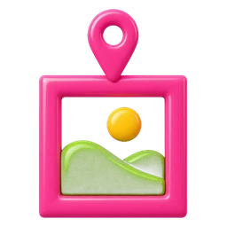
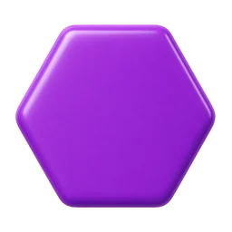
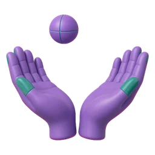
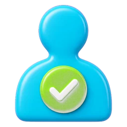
Prof. Mário César Nascimento, PhD · Versão de 25 de outubro de 2026 mosaico-sala.web.app
O MOSAICO transforma o conteúdo da sua aula em atividades em grupo que só se resolvem com conversa. A ideia está no nome: cada grupo recebe uma parte, ninguém tem o quadro completo, e a turma precisa juntar as peças para chegar à explicação e superar uma meta coletiva.
Você traz o material (um texto, um capítulo, uma apresentação). O MOSAICO ajuda a montar as etapas, divide as evidências entre os grupos, leva tudo para os celulares dos alunos e mostra no telão o andamento da turma. Você conduz; a plataforma cuida da logística.
A gramática MOSAICO
Fracionar
Cada grupo recebe só uma parte das evidências. Ninguém resolve sozinho.
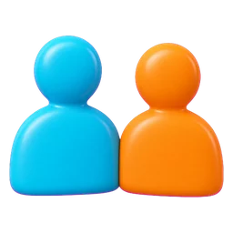
Cooperar
Os grupos trocam o que descobriram: a explicação certa integra as partes de todos.
Competir para superar
Placar e desafios dão ritmo, mas o adversário é o problema, não o colega.
Atingir a meta
A turma inteira vence quando supera a meta. O sucesso de um ajuda todos.
A gramática é uma proposta: você decide, em cada atividade, o que usar. Uma aula pode ser só um quiz rápido ou uma investigação completa em vários encontros.
2Por que em sala, no celular, sem instalação
Sem instalar, sem cadastro
O aluno abre o navegador, digita um código de 6 números (ou aponta a câmera para o QR) e escreve o primeiro nome. Não há aplicativo, conta, senha nem e-mail. A aula começa em um minuto.
O celular que já está na sala
O aparelho que costuma disputar a atenção vira ferramenta de trabalho em grupo. Cada celular mostra só a parte daquele grupo ou daquele aluno: é isso que obriga a conversar.
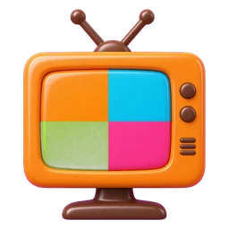
Telão como palco comum
O projetor mostra o QR, de quem é a vez, o placar e, no fim, as explicações. A turma discute olhando para o mesmo lugar.
Você no controle
O professor inicia e encerra cada etapa, decide quando revelar, cobre grupos ausentes e ajusta o tempo. A plataforma nunca avança sozinha.
Tempo de aula ativo
Sem papel para distribuir nem corrigir: cada envio chega na hora, com o retorno imediato que a atividade prevê. O tempo vai para a discussão.
Privacidade por desenho
As respostas esperadas ficam só no aparelho de quem conduz. Os nomes dos alunos existem só durante a aula e são apagados quando a sala é encerrada.
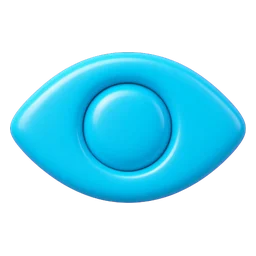
Acessível
Botões grandes, alternativa de "toque e toque" para quem não consegue arrastar, imagem que amplia em tela cheia e textos legíveis no celular.
Dados para o professor
Ao fim, um relatório com envios e acertos por etapa e por grupo, sem nomes, ajuda a decidir o que retomar na próxima aula.
Internet oscilando? As páginas continuam abertas e as respostas são enviadas quando a conexão volta. O aluno vê um aviso de "sem internet" em vez de perder o que fez.
3Antes da primeira aula
Você precisa de
Para quê
Uma conta Google
Entrar na área do professor, preparar, revisar e exportar atividades.
Ser professor autorizado
Guardar atividades na biblioteca, abrir salas on-line e gerar com a IA integrada. Peça ao administrador.
Celular ou computador
Para conduzir. O celular basta; o computador é mais confortável para preparar.
Projetor ou TV (opcional)
Para o telão. Sem ele, a aula funciona; o telão só deixa tudo visível para a turma.
Celulares dos alunos
Um por aluno é o ideal; um por grupo também funciona em várias atividades.
Internet
No aparelho de quem conduz e nos celulares (dados móveis ou Wi-Fi).
Quer conhecer antes? Na página inicial, o cartão "Quer conhecer antes?" abre uma atividade com turma simulada, sem cadastro. Tudo fica no seu navegador.
4A página inicial: três portas
Quem chega ao MOSAICO escolhe uma de três portas:
Entrar em uma sala
Para o aluno. O código de 6 números é digitado no próprio cartão; com os 6 números, segue direto.
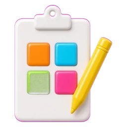
Sou professor
Leva à área do professor, com login Google.
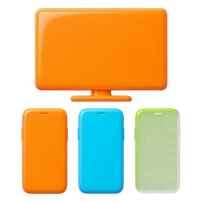
Quer conhecer antes?
Uma atividade de demonstração com turma simulada.
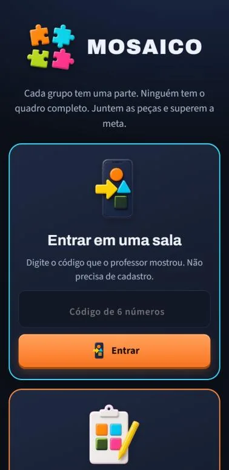
Página inicial no celular
5Professor: os 8 passos
A preparação segue sempre a mesma ordem. Os números aparecem nos botões da plataforma, para você saber onde está.
Na página inicial, toque em Sou professor e depois em Entrar com Google. Você chega à sua área, que mostra:
Três ações grandes: Criar com IA, Aplicar em sala e Usar um modelo.
Minhas atividades: o que você salvou, com Aplicar, Abrir, duplicar e apagar; e os rascunhos deste navegador, com Continuar e lixeira.
Modelos prontos para adaptar.
Mais opções: criar do zero, importar planilha, telão, simulador e pedido para IA externa.
Área do professor
2
Inserir o material
Em Criar com IA, cole o texto da aula ou toque em Escolher arquivo (PDF com texto selecionável, Word, texto ou Markdown; até 60 mil caracteres). O arquivo é lido no seu próprio navegador.
Confira a extração. PDF digitalizado como imagem não tem texto para ler; nesse caso, cole o texto.
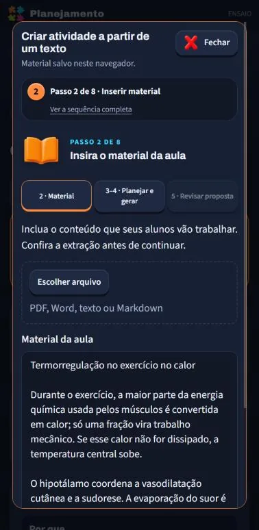
Passo 2: material
3
Planejar
Diga para quem é a aula, o tempo disponível, o que os alunos deverão fazer (investigar, relacionar, explicar, comparar, decidir, revisar), o que deverão saber ao final e se o trabalho é em grupos (e quantos). Se quiser, escolha você mesmo os formatos.
Em Como usar o material, escolha entre usar só o que está no texto ou permitir situações fictícias identificadas.
Passo 3: planejar
4
Gerar ou adaptar
Toque em Gerar atividade com IA. Em menos de um minuto chega uma proposta com etapas, peças para cada grupo, respostas esperadas e as fontes de cada evidência. A IA também registra pendências: o que o material não traz e precisa da sua decisão.
IA integrada (Gemini): para professores autorizados.
IA externa: para todos. A plataforma monta o pedido completo; você cola na IA que preferir e traz a resposta de volta.
Modelo pronto: abra um exemplo e troque o conteúdo pelo seu.
A IA propõe; quem decide é você. Nada vai para a sala sem passar pela sua revisão.
5
Revisar o conteúdo
Na aba Revisão, cada etapa mostra, em linguagem de professor, o que os alunos vão receber e a resposta esperada: a alternativa certa, a ordem dos cartões, as colunas, os pares, os finais de cada decisão. Confira e marque Conferi o conteúdo desta etapa.
A plataforma valida a estrutura (nada faltando, tempos, grupos), mas não verifica a correção científica: essa é a sua parte.
Sugestões de equilíbrio avisam, por exemplo, quando há três formatos iguais seguidos. São propostas; você decide.
A ordem das etapas se muda pelas setas ↑ ↓ no editor de cada etapa.
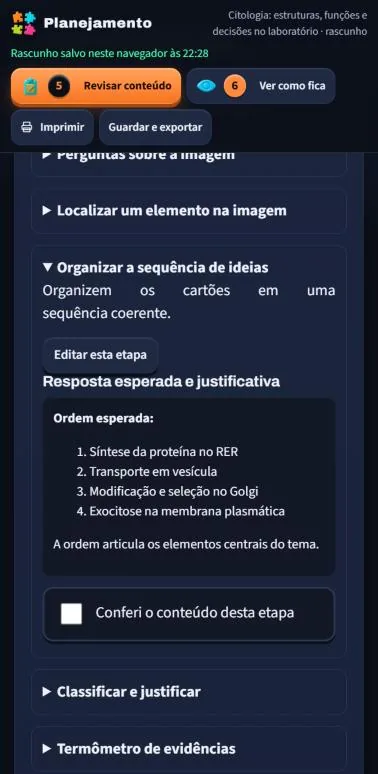
Passo 5: revisão legível
6
Experimentar: “Ver como fica”
Abre, lado a lado, o seu celular de condução, o telão e uma turma simulada (até 8 celulares em piloto automático). Dá para experimentar uma etapa só, sem esperar as anteriores. Nada disso vai para a internet.
Ensaiar 5 minutos evita surpresas na frente da turma.
7
Salvar
Guardar e exportar → Salvar na biblioteca guarda a atividade na sua conta, para abrir em qualquer aparelho. Você pode compartilhar com os outros professores (eles leem e duplicam; só você edita). Também é possível baixar a planilha (.xlsx) ou imprimir a versão em papel.
A planilha e o material de quem conduz contêm o gabarito. Não entregue aos alunos.
Rascunhos ficam no navegador; a biblioteca, na sua conta.
8
Aplicar em sala
Em Minhas atividades, toque em Aplicar (ou, na área do professor, em Aplicar em sala). A próxima seção mostra a aula do começo ao fim.
Você conduz pelo celular, andando pela sala.
6Aplicar em sala, do QR ao resultado
A condução tem quatro abas, sempre no topo: 8.1 Atividade, 8.2 Sala, 8.3 Grupos e 8.4 Condução.
Abrir a sala
Toque em Abrir sala. Aparecem o código de 6 números e o QR Code. Os alunos entram por qualquer um dos dois. Quando todos estiverem dentro, use Fechar a entrada; quem chegar depois pode entrar se você reabrir.
Abrir o telão
No computador ligado ao projetor, abra mosaico-sala.web.app/telao e digite o código: o telão abre sozinho. Ou toque em Abrir telão no seu aparelho.
Aba 8.2 · Sala
Formar os grupos
Sortear grupos equilibrados distribui quem entrou entre os grupos planejados. Cada grupo tem um representante (REP), que envia as decisões do grupo. Você pode mover pessoas, trocar o representante e sortear de novo. Quem chega atrasado vai para o grupo com menos gente.
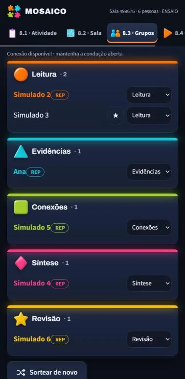
Aba 8.3 · Grupos
Conduzir as etapas
Toque em Iniciar etapa. Você acompanha quem já enviou, o cronômetro sugerido (pausar, +1 min, +5 min) e o roteiro do professor daquela etapa. Quando quiser, Encerrar etapa (fica sempre na barra de baixo).
Grupo faltando? A etapa seguinte avisa e oferece Registrar ausência e liberar: os outros grupos seguem com as contribuições que existem.
Quiz, equipe, cadeado: você sorteia a pergunta, abre a fase do grupo e revela a resposta no seu ritmo.
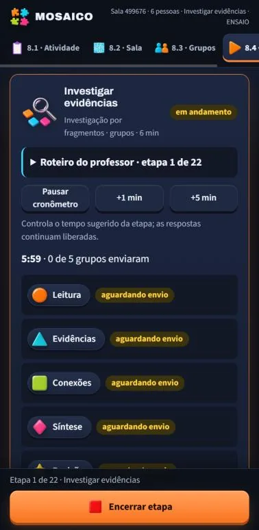
Aba 8.4 · Condução
O que a turma vê no telão
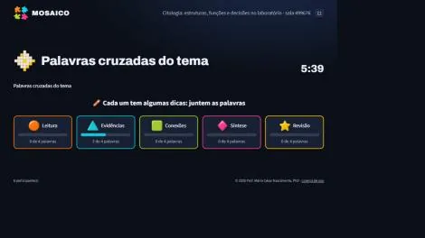
O telão mostra a etapa, o tempo e o progresso de cada grupo, nunca as respostas antes de você revelar.
Resultado e encerramento
Revelar resultado final: o telão e os celulares mostram se a turma atingiu a meta e as explicações de cada etapa.
Baixar o relatório (.csv, sem nomes) para planejar a próxima aula.
Encerrar sala (aba 8.2, dois toques): apaga participantes, envios e a sala.
Esqueceu de encerrar? Toda sala vence em 24 horas. Quando você voltar a "Aplicar em sala", as suas salas vencidas são apagadas sozinhas, em qualquer aparelho. E, como garantia, o próprio banco de dados apaga o que venceu.
7Aluno: entrar e participar
Abrir a sala: apontar a câmera para o QR do telão, ou abrir mosaico-sala.web.app e digitar o código no cartão Entrar em uma sala.
Digitar o nome: o primeiro nome ou um apelido basta. Não há cadastro.
Encontrar o grupo: o celular mostra o grupo (cor e forma) e quem é o representante.
Seguir a etapa: cada etapa aparece quando o professor inicia. Envios importantes pedem dois toques para confirmar.
Se o celular recarregar ou a internet cair, basta abrir de novo: o aluno volta para o mesmo grupo e não perde o que já enviou.
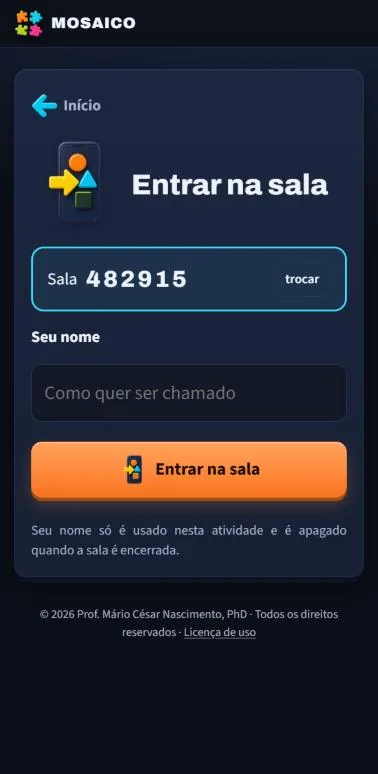
Código confirmado pelo QR: só falta o nome
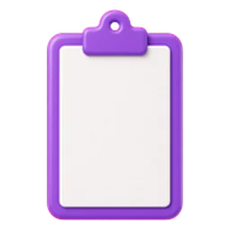
8As 15 atividades e por que funcionam
Cada atividade é um formato que você combina com o seu conteúdo. Abaixo, o que o aluno faz, por que isso ajuda a aprender e quando usar.
Grupo · cooperação
Investigação por fragmentos
Como funciona
Cada grupo recebe só uma parte das evidências, marca as que usou, escolhe a hipótese que suas peças sustentam e justifica.
Por que é importante
É o coração do MOSAICO: a informação dividida cria interdependência positiva, base da aprendizagem cooperativa (o mesmo princípio do método jigsaw). O aluno pratica raciocínio por evidências e percebe que conclusões dependem do que se sabe.
Quando usar
Abertura de um tema, casos clínicos, mistérios, problemas com várias causas possíveis.
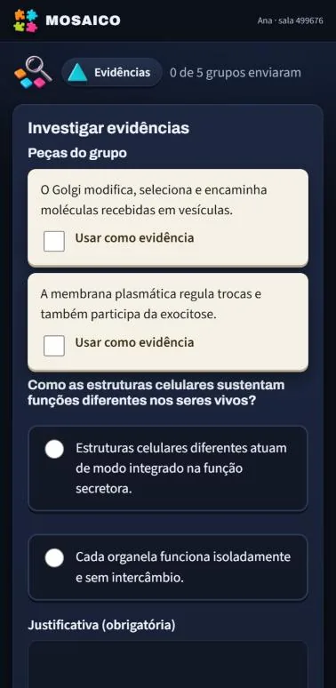
Grupo · argumentação
Comparação de hipóteses entre grupos
Como funciona
Cada grupo vê o que os outros concluíram e com quais evidências, e decide qual explicação integra melhor o conjunto.
Por que é importante
Ensina a revisar uma conclusão diante de novas evidências, o gesto central do pensamento científico. A troca entre grupos transforma o "nós achamos" em "o conjunto mostra".
Quando usar
Logo depois de uma investigação por fragmentos.
Grupo · presencial
Quebra-cabeça de texto ou imagem
Como funciona
Cada celular mostra uma peça (um trecho, uma conta ou um recorte de imagem). Só pondo os celulares na ordem certa o todo aparece. Não há envio: a etapa seguinte cobra o que foi montado.
Por que é importante
Obriga a conversar e se movimentar: ninguém resolve olhando só para o próprio aparelho. Trabalha sequência, coerência e leitura do todo.
Quando usar
Processos em etapas, poemas, demonstrações, esquemas e figuras.
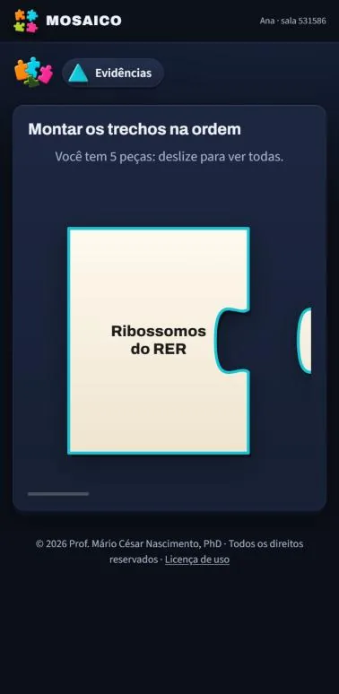
Grupo · escape room
Cadeado do grupo
Como funciona
Cada aluno responde a própria pergunta no celular. O grupo destrava quando um número de membros acerta, ou quando junta os pedaços revelados e o líder digita o código.
Por que é importante
Une responsabilidade individual (cada um tem a sua pergunta) a um objetivo comum (o cadeado é do grupo). Quem sabe ajuda quem não sabe, porque todos precisam acertar.
Quando usar
Revisão de conceitos, fechamento de unidade, desafio de abertura.
Entre grupos · telão
Quiz entre grupos
Como funciona
A cada pergunta o sistema sorteia o grupo da vez. A pergunta aparece só no celular do líder desse grupo, que lê em voz alta; o telão mostra a vez e o placar. Se errar, a pergunta passa para outro grupo.
Por que é importante
Responder de memória é uma das formas mais eficazes de fixar o conteúdo (efeito de testagem). A pergunta lida em voz alta faz o grupo inteiro pensar junto.
Quando usar
Revisão rápida, aquecimento, fechamento com energia.
Grupo · organização
Cartões de arrastar
Como funciona
O grupo arrasta cartões num quadro compartilhado: ordenar (sequência ou causa e efeito), classificar em colunas ou posicionar num termômetro entre dois polos. Cada celular pode segurar só alguns cartões. Quem não consegue arrastar toca no cartão e depois no lugar.
Por que é importante
Ordenar e classificar tornam visível como o aluno organiza o conhecimento. O termômetro sem gabarito abre debate sobre graus e critérios (ótimo para ética).
Quando usar
Cascatas e vias, linhas do tempo, categorias, dilemas.
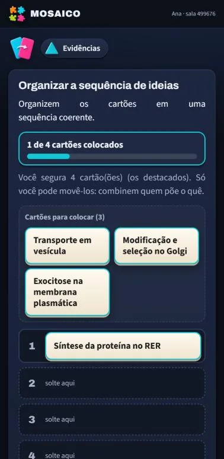
Grupo · associação
Pares
Como funciona
Ligar: o grupo arrasta cada cartão até o seu par (estrutura e função, termo e definição). Memória: cartas viradas; vira duas, e se formam par ficam abertas. A memória pode ser por grupo ou no telão, com a vez de cada grupo.
Por que é importante
Reforça associações que sustentam o raciocínio mais complexo; a memória acrescenta atenção e recuperação ativa de um jeito leve.
Quando usar
Vocabulário técnico, estrutura × função, causa × efeito.
Individual soma para o grupo
Corrida
Como funciona
Cada aluno responde no próprio ritmo e os pontos somam para o grupo. Formatos: quiz, corrente de causa e efeito (cada acerto libera a próxima consequência) e direção (↑ ↓ = para cada variável depois de um estímulo). As alternativas aparecem em ordem diferente para cada aluno.
Por que é importante
Prática de recuperação com retorno imediato e no ritmo de cada um. A corrente e a direção treinam raciocínio causal, essencial em ciências e saúde.
Quando usar
Fixação, fisiologia e mecanismos, preparação para prova.
Grupo · vocabulário
Palavras cruzadas
Como funciona
O professor dá a palavra e a dica; a grade se monta sozinha. As dicas ficam divididas entre os celulares, então o grupo precisa juntar. A grade pode ser de cada grupo ou uma só, da turma, no telão.
Por que é importante
Recuperar uma palavra a partir de uma definição consolida o vocabulário da área; dividir as dicas faz do vocabulário um trabalho coletivo.
Quando usar
Termos novos, revisão de unidade.
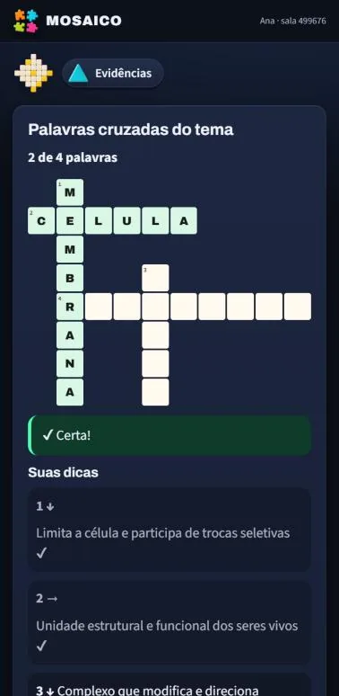
Individual · memória
Sequência (Genius)
Como funciona
O painel acende termos com luz e som; o aluno repete a sequência, que cresce a cada acerto. Os botões são termos sorteados de um banco, então cada partida é diferente. Vale o recorde de cada um, que soma para o grupo.
Por que é importante
Exercita memória de trabalho e atenção enquanto expõe o aluno repetidas vezes ao vocabulário. É uma pausa ativa que mantém o tema em jogo.
Quando usar
Aquecimento, intervalo entre etapas longas, vocabulário.
Pensamento
Quiz que faz pensar
Como funciona
Em equipe: cada um responde sozinho, depois o grupo debate e manda a resposta do grupo. Decisão: cada escolha leva a um cenário diferente, até um final bom, neutro ou ruim. Certeza: junto com a resposta, o aluno diz se tem certeza, está em dúvida ou chutou.
Por que é importante
O formato em equipe segue a aprendizagem baseada em equipes (TBL): o debate só começa depois do pensamento individual. A decisão ensina consequências. A certeza desenvolve metacognição: saber o que se sabe.
Quando usar
Casos clínicos e éticos, conceitos com confusões frequentes, autoavaliação.
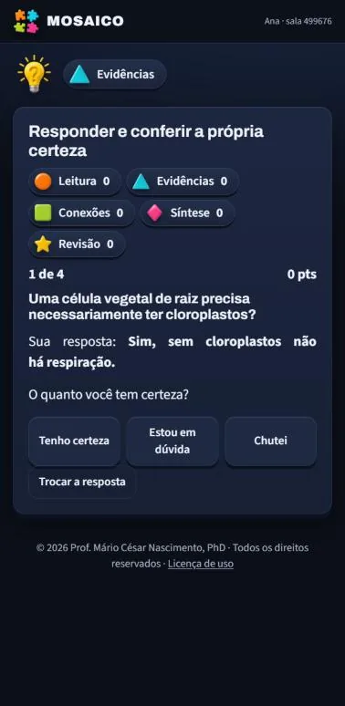
Leitura visual
Análise de imagem
Como funciona
Você envia uma foto, um gráfico ou um modelo 3D. Os alunos marcam pontos na imagem, respondem perguntas sobre ela ou descrevem o que observam (a descrição de cada grupo vai para o telão). A imagem amplia em tela cheia no celular, até 3×.
Por que é importante
Ler esquemas, gráficos e imagens é uma competência própria. Unir imagem e palavra fortalece a compreensão (codificação dupla), e separar o que se vê do que se infere é treino de observação científica.
Quando usar
Lâminas, exames de imagem, gráficos de experimentos, mapas, obras de arte.
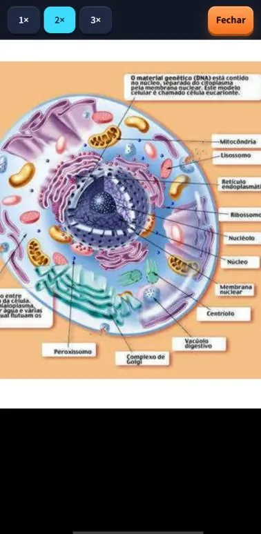
Individual · autoconhecimento
Escala padronizada
Como funciona
Cada aluno responde uma escala de autorrelato de domínio público (Mini-IPIP6: os cinco grandes fatores de personalidade e Honestidade-Humildade) e vê o próprio perfil no celular. O telão mostra só a média da turma, e só com 5 respostas ou mais.
Por que é importante
Dá base concreta para discutir traços, conduta e diferenças individuais sem expor ninguém. É para refletir, não para avaliar ou diagnosticar.
Quando usar
Ética, psicologia, comportamento, antes de um jogo econômico.
Experimento em sala
Jogo econômico
Como funciona
Jogos clássicos da economia comportamental: ditador, ultimato, confiança e bens públicos. Cada aluno decide uma vez, sem saber com quem joga; os pares são sorteados e cada celular vê o próprio ganho. O telão mostra a distribuição da turma.
Por que é importante
A turma vive o experimento antes de discutir a teoria: justiça, confiança e cooperação deixam de ser abstratas quando a decisão foi sua.
Quando usar
Ética, economia, saúde coletiva, dinâmica de grupos.
Individual · transferência
Questão individual
Como funciona
Cada aluno responde uma questão de múltipla escolha, em geral aplicando o que o grupo integrou a um caso novo. Pode contar para a meta da turma.
Por que é importante
Garante responsabilidade individual dentro do trabalho em grupo e mede a transferência: se o aluno consegue usar o que aprendeu numa situação diferente.
Quando usar
Fechamento de toda atividade em grupo.
9A meta da turma
Em Geral e meta, você liga a meta, escolhe o limiar (de 40% a 80% de acertos) e marca quais etapas contam. Só essas entram na conta, e só elas aparecem como "conta para a meta" na condução. No fim, o telão mostra se a turma superou o desafio.
A meta é coletiva de propósito: o placar entre grupos dá ritmo, mas a vitória é da turma. Quem já entendeu tem um bom motivo para explicar a quem ainda não entendeu.
10Administração
Os administradores veem o botão Administração no topo da área do professor. Lá estão:
Atividades de todos
Lista de todas as atividades da biblioteca, com autor e data, filtro por professor, Abrir cópia e apagar.
Salas
Salas abertas e vencidas, com o número de participantes. Encerrar apaga a sala e tudo o que há nela; Encerrar as vencidas faz a faxina de uma vez.
Professores autorizados
Incluir e tirar professores, com quantas atividades cada um tem. Tirar corta o acesso; as atividades dele continuam até alguém apagá-las.
IA integrada
A geração com o Gemini usa créditos pré-pagos do projeto. Se acabarem, o professor vê "Os créditos de IA do projeto acabaram" e pode usar a IA externa.
11Privacidade e dados
Alunos não têm conta. O servidor guarda só o nome digitado, o grupo e o que cada um envia, e apenas enquanto a sala existe.
As respostas esperadas ficam no aparelho de quem conduz. O telão e os celulares só recebem o que você revela.
A ordem das alternativas é sorteada por aluno: a posição nunca entrega a resposta.
A introdução da atividade é pública (aparece no telão e nos celulares). A revisão avisa quando ela parece falar com o professor.
Encerrar apaga tudo. Salas esquecidas vencem em 24 horas e são apagadas automaticamente.
Material e IA: arquivos são lidos no navegador; ao pedir a geração integrada, o texto do material vai ao Gemini (Google). Nenhum dado de aluno é enviado.
Casos fictícios: a validação avisa quando um texto parece conter CPF, e-mail ou telefone. Peça aos alunos que usem o primeiro nome.
12Dúvidas e problemas comuns
O aluno digitou o código e aparece “sala não encontrada”.
Confira os 6 números no telão. A sala pode ter sido encerrada ou vencida (24 horas). Abra uma sala nova.
“A entrada nesta sala está fechada.”
Na aba 8.2 · Sala, reabra a entrada. Quem chegar vai para o grupo com menos pessoas.
Um grupo não enviou e a turma está esperando.
Encerre a etapa e use Registrar ausência e liberar: os outros grupos seguem com as contribuições que existem.
A imagem está pequena no celular.
Toque na imagem ou em Ampliar imagem: abre em tela cheia, com zoom de 1×, 2× e 3×.
“Os créditos de IA do projeto acabaram.”
Avise o administrador. Enquanto isso, use Usar uma IA externa no mesmo diálogo: o pedido completo é montado para você.
Não aparece o botão para gerar com IA.
A geração integrada é para professores autorizados. Peça acesso ao administrador ou use a IA externa.
Posso aplicar sem internet?
Para uma sala real, todos precisam de internet. Para ensaiar sozinho, acrescente ?ensaio=1 ao endereço ou use “Ver como fica”: tudo roda no seu navegador.
Posso usar no papel?
Sim: Imprimir atividade gera as folhas da turma e o material de quem conduz (este com o gabarito, em folha separada).
13Para saber mais
As ideias por trás dos formatos vêm de linhas de pesquisa conhecidas em educação. Algumas referências de partida:
Aronson, E. e colaboradores. The Jigsaw Classroom (1978): a turma como quebra-cabeça, cada aluno com uma parte.
Johnson, D. W. e Johnson, R. T.: aprendizagem cooperativa, interdependência positiva e responsabilidade individual.
Roediger, H. L. e Karpicke, J. D. (2006), Test-enhanced learning: o efeito de testagem na retenção.
Michaelsen, L. K.: aprendizagem baseada em equipes (Team-Based Learning).
Flavell, J. H. (1979): metacognição e monitoramento do próprio conhecimento.
Paivio, A.: teoria da codificação dupla (imagem e palavra).
Jogos do ditador, ultimato, confiança e bens públicos: paradigmas clássicos da economia comportamental.
Mini-IPIP6: versão curta, de domínio público, dos cinco grandes fatores com Honestidade-Humildade.